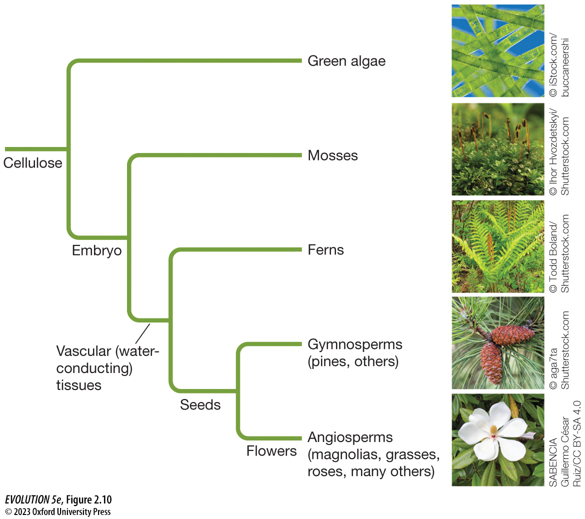
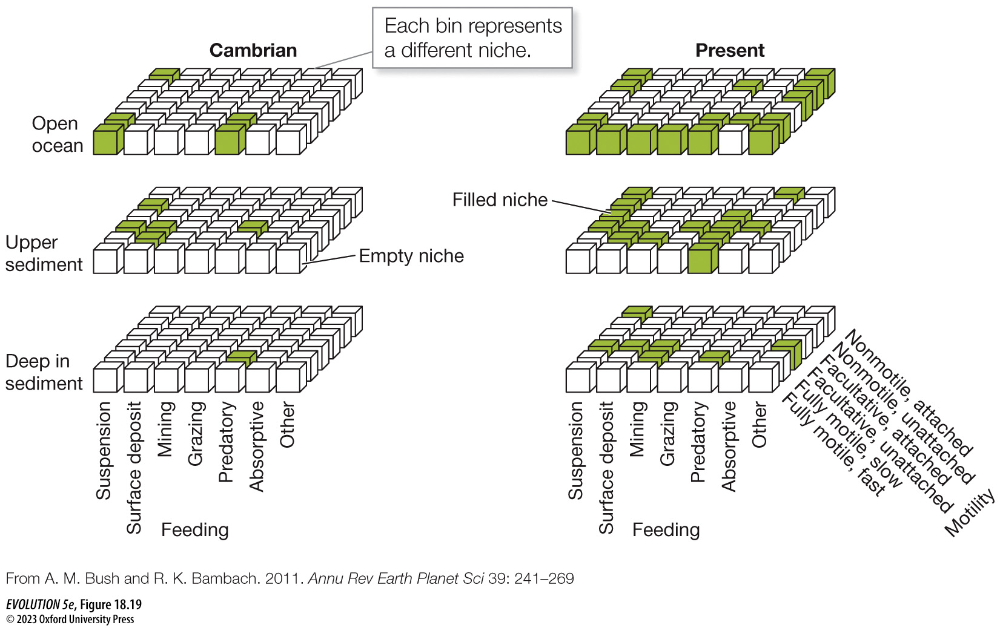

Fundamentals of Evolution
EEEB G6110
Session 2: Biodiversity and Tree-thinking
Today's topics
1. Evidence of Evolution
2. Phylogenetic Trees
3. History of the Evolution of Life on Earth
I Think
Important definitions
Common Ancestry:
Darwin extrapolated from the relationships among organisms like finches with similar morphologies, to relationships among major orders, to relationships among phyla, all the way to the idea of a universal common ancestor.
Most Recent Common Ancestor (MRCA)
All organisms share a most common ancestor at some time in their evolutionary history, representing the ancestor from which they diverged. Closely related species have more recent common ancestors than more distant relatives.
Phylogeny
A tree-like structure representing the evolutionary relationships of organisms related by common ancestry. A phylogeny should be read from the tips towards the root. Those sharing more recent common ancestors are more closely related.
Common Ancestry and Homology
Darwin proposed that organisms descend from shared common ancestors, and that all organisms descended from a long-past universal common ancestor (LUCA). There is now overwhelming evidence to support this. The key evidence of common ancestry is homology, the inheritance of ancestral features that become modified in descendants.
Homology is abundantly evident in the fossil record as gradual changes over time among descendant lineages from a common ancestor's phenotype. Similarly, homology is evident in the features of extant organisms in the similarity of structures among organisms despite differences in function
Homology in morphological structures

Homology in Genetics
The genome is a molecular encoding of huge amounts of information and each site or gene represents a homologous character inherited from a common ancestor. Close relatives have had less time for mutations (modifications) to occur since diverging from a common ancestor, while more distant relatives have had more time to accumulate differences. These differences underlie their many morphological and functional differences.
Convergence and Parallelism
Both within the fossil record, and using inferred phylogenetic relationship among extant organisms, we can study patterns of trait evolution.
Given the process of common ancestry, we expect organisms to diverge over time from each other and from their common ancestral phenotype. But diverge in what ways? Random evolution among descendant lineages is unlikely to have given rise to the diversity of organisms we see today, particularly in terms of their apparent fit to their environments. Instead, evidence of Darwin's other main thesis, natural selection, is abundantly evident in nature through patterns of trait evolution.
Parallelism
A key signature of natural selection is patterns of repeated evolution of similar structures representing repeated adaptations to similar selection pressures.
Famous examples of parallel evolution involve the repeated evolution of similar ecological traits among geographically isolated species of Anolis Lizards on different Carribean islands, or of Viburnum plants in disjunct montane cloud forests. Here the same homologous traits evolved similar character states repeatedly, and in ways that were correlated with their environment.
Parallel (replicated) evolution of leaf forms
Convergence
By contrast, many organisms also exhibit convergent evolution, where similar functions/traits evolve from non-homologous origins.
Identifying/Testing Homology
The concept of homology is clearly defined, however, identifying homology among biological structures can in some cases be quite challenging. For example, although the genetic and developmental basis by which eyes evolved in cephalopods versus vertebrates are very different, it has also been found that they share some homologous genetic basis.
For example, genes involved in light capture trace all the way back to single-celled archeael ancestors. Thus, deep homology at this very ancient level may still have influenced their likelihood of evolving these convergent features. This idea will be revisited in the topic of evolutionary development later in class.
Evidence of Evolution
Since Darwin's publication scientists have amassed abundant evidence for
evolution.
(1) The fossil record provides clear and irrefutable evidence of common ancestry and adaptations. The order in which major lineages of life arise in the fossil record and their timing is uniform across the globe.
(2) Experimental studies of fast-living organisms have allowed us to observe evolution in action, providing evidence of descent with modification and adaptations in organisms such as bacteria, yeast, and in our many natural observations of the evolution of herbicide, insecticide, and antibiotic resistance.
(3) Finally, comparative studies of living taxa provide ample evidence of evolution by fitting with expectations of models of evolution. See Box
2.3 of your textbook. Homology, Vestigial characters, Development,
Convergence, Suboptimal design, etc.
Phylogenetics
Tree-Thinking: Interpreting phylogenies
"It is impossible to really understand evolution without an ability to accurately interpret phylogenetic trees" (Bob O'Hara)
Tree-Thinking: Interpreting phylogenies
Tree-Thinking: Interpreting phylogenies
Tree-Thinking: Interpreting phylogenies
Inferring trees: shared derived character states
Phylogenetics
One goal of phylogenetics is to infer the tree-of-life -- a phylogeny for all extant species. However, this is not the only goal of phylogenetics, instead there are countless subfields, disciplines, and applications of
phylogenetics.
Examples include topics like naming lineages on trees (taxonomy); advancing statistical models of DNA subsitutions (molecular phylogenetics); improving computational efficiency of tree inference algorithms (computational phylogenetics); refining divergence time estimates using fossil calibrations (paleo or relaxed clock phylogenetics); investigating non-bifurcating patterns arising from hybridization (phylogenetic network inference); investigating the consequences of gene duplication and loss (comparative and functional genomics); tracking dispersal and spread of organisms by
ancestry (phylodynamics); and many many more topics concerning phylogenetic trees.
Using phylogenies to study evolution
Phylogenetic trees are not just images of species relationships, but in
fact represent a data structure on which evolution can be modeled/studied.
This includes information of hierarchical relationships, measures of
divergence (edge lengths), confidence values (supports), and possibly
additional meta-data.
Patterns of discrete and continuous trait evolution can be modeled on trees.
Rates of diversification through time can be inferred from trees.
Models combining both of these features can test macro-evolutionary
hypotheses, such as whether a particular trait state affects rates
of diversification.
Endosymbiosis and Multicellularity in Eukaryotes
Cambrian Explosion
An explosion of diversity of animal fossils first appeared in the Cambrian ~540 Mya.
All extant animal lineages can be traced back to
common ancestors observed at this time. These early splits define
the major animal phyla. None of these have gone completely extinct,
although many of their members have.
How do you think diversity has changed through time?
Has diversity increased or decreased?
Are there limits on diversity? What does this mean?
What is the correct unit to quantify diversity? What are the pitfalls
of using alternative units?
Models of differences in diversity between regions
Sepkoski Curve
Skeletonized marine biodiversity through time

Sepkoski Curve
Overall diversity in terms of the number of families or genera has
increased throughout the Phanerozoic (Cambrian to now).
There have been 4-5 mass extinction events that vary significantly
from the background rate of extinction: O, P, T, K, (maybe D).
The background extinction rate has decreased through time. An increase
in speciation rate is not necessary to explain this increase in
diversity. Does this represent an "optimization of fitness through time"?
More ecological niches are filled now than in the Cambrian
The evolution of burrowing, tiering, predation, defense, and many of other key innovations have created new niches that allow more species to partition the same limited space. Does this increase overall diversity? Is there a limit to how much the environment can be partitioned? Is it always increasing?
Niche construction
Not only has species diversity changed through time, but so too
has the morphological and ecological disparity of lineages (i.e.,
the number of niches, or ways to live).
Many organisms create their own niche (niche construction). Many
of the ecosystems we observe today did not exist in prior geologic
epochs.
Example: Rain forests are only <200Mya. Prior to this, the hydraulic
efficiency of forest plants was not great enough to create modern
rain forests.
Red Queen Hypothesis
Has the background extinction rate really decreased through time? And if
so, how? Are newer species less prone to extinction than in the past?
Val Valen measured the length of time that genera persisted throughout
the Phanerozoic and showed that this duration has remained constant.
Lineages have not evolved to become more resistant to extinction!
One explanation for this is termed the Red Queen Hypothesis. It states
that because the selective environment (and thus risk of extinction)
is always changing, it is not possible to become optimally adapted.
Instead, a lineage must continually evolve simply to survive (keep
running just to stay in place).